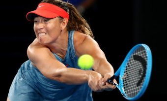

„Australian Open“: Šarapova patiesė pernykštę čempionę

Melburne (Australija) vykstančio atvirojo Australijos teniso čempionato („Australian Open“) vyrų vienetų varžybų trečiajame rate penktadienį 37-erių metų šveicaras Rogeris Federeris (3-ioji pasaulio... Skaityti toliau...